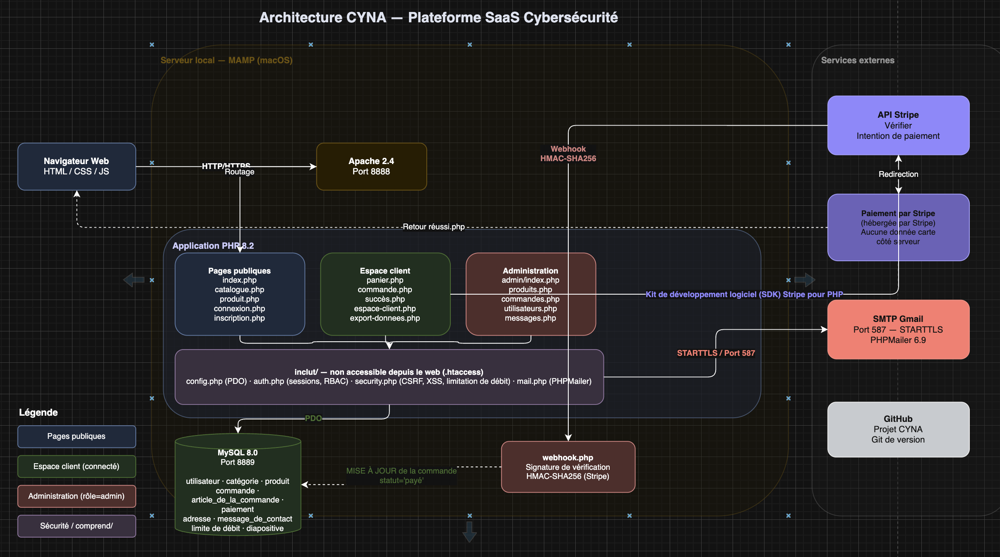
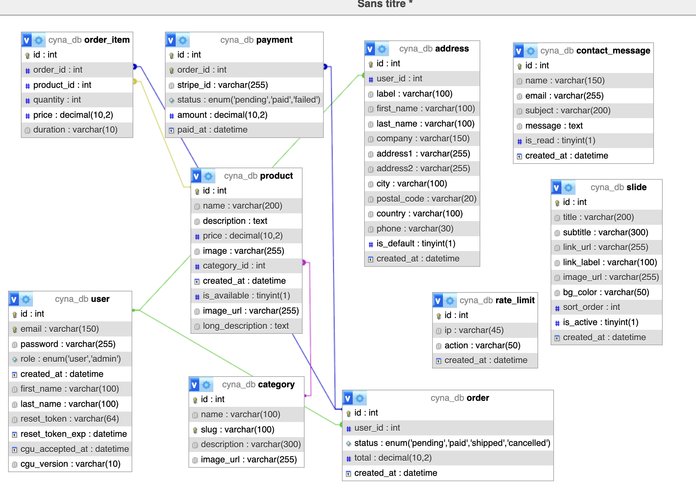
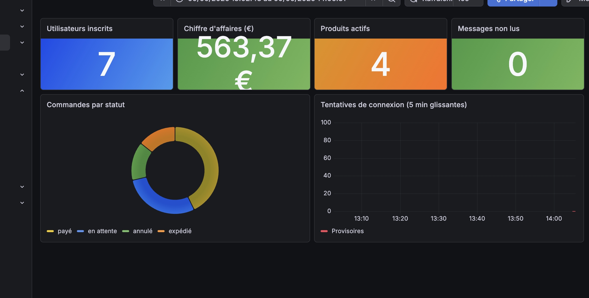

CYNA est une plateforme SaaS de cybersécurité développée dans le cadre du projet fil rouge CPI Bachelor 2025-2026. Elle permet à des entreprises (TPE, ETI) de souscrire à des solutions de protection numérique sous forme d'abonnements mensuels ou annuels : EDR (Endpoint Detection & Response — protection des postes de travail), SOC Managé (Security Operations Center — surveillance 24/7 par des experts certifiés) et VPN Entreprise (chiffrement AES-256 avec gestion centralisée des accès).
La plateforme couvre l'intégralité du cycle commercial : site vitrine public présentant les offres, catalogue filtrable par catégorie, fiches produit détaillées, tunnel d'achat avec paiement Stripe Checkout, espace client personnel (historique des commandes, gestion des adresses, modification du profil, export et suppression des données RGPD), et un backoffice d'administration complet permettant de gérer les produits, catégories, commandes, messages de contact et carousel de la page d'accueil.
Le projet répond à un enjeu marché réel : les PME françaises sont de plus en plus ciblées par des cyberattaques (ransomware, phishing, compromission de postes), mais ne disposent généralement pas des ressources pour maintenir une équipe sécurité interne. CYNA se positionne comme un fournisseur SaaS accessible, permettant à ces entreprises de bénéficier d'un niveau de protection avancé sans investissement lourd en infrastructure.
Le choix de PHP 8.2 natif sans framework est motivé par la maîtrise complète du code produit et la transparence totale sur les mécanismes de sécurité implémentés. Chaque protection OWASP (injection SQL, XSS, CSRF, brute force, clickjacking) a été codée manuellement, sans s'appuyer sur les abstractions d'un framework tiers. La base de données MySQL 8.0 est interrogée exclusivement via des requêtes PDO préparées. La plateforme est conteneurisée avec Docker, versionnée sur GitHub avec un pipeline CI/CD GitHub Actions intégrant PHPUnit 11, et dispose d'un monitoring temps réel via Prometheus et Grafana.
L'équipe est composée de deux développeurs : Omar AKAKBA (back-end, base de données, CI/CD, sécurité, monitoring) et Elyes JAFFEL (front-end, design Figma, HTML/CSS/Bootstrap 5, JavaScript).
L'architecture de CYNA est une architecture monolithique PHP natif organisée selon un modèle MVC simplifié :
catalogue.php, produit.php, panier.php, commande.php…) — chaque fichier gère la logique métier de sa page et génère le HTML directement.includes/ — connexion BDD (config.php), authentification (auth.php), sécurité CSRF/XSS (security.php), pagination, rate limiting, envoi d'emails.includes/header.php (en-têtes HTTP de sécurité, navigation, session) et includes/footer.php.admin/ avec ses propres pages CRUD, accès protégé par requireAdmin().Quatre principes directeurs guident l'ensemble du projet :
htmlspecialchars()), toutes les requêtes SQL sont préparées, tous les formulaires POST sont protégés par CSRF token.| Objectif | Indicateur / Cible | Statut |
|---|---|---|
| Performance des pages | Temps de réponse < 500 ms (mesure MAMP local / Alwaysdata) | ✅ Atteint |
| Couverture tests | 29 tests PHPUnit — 3 classes : SecurityTest, AuthTest, DatabaseTest | ✅ Atteint |
| Pipeline CI vert | GitHub Actions vert sur branche main (aucun commit cassant) | ✅ Atteint |
| Authentification sécurisée | bcrypt cost 12, session PHP, rate limiting (5 essais / 15 min) | ✅ Atteint |
| Paiement opérationnel | Stripe Checkout + validation webhook + mise à jour statut commande | ✅ Atteint |
| RGPD | Suppression compte (anonymisation) + export JSON + consentement CGU | ✅ Atteint |
| Monitoring | 7 métriques Prometheus exposées + dashboard Grafana opérationnel | ✅ Atteint |
| Zéro vulnérabilité critique | composer audit : aucune vulnérabilité connue dans les dépendances |
✅ Atteint |

L'architecture se décompose en quatre couches :
| Couche | Technologie retenue | Alternatives écartées | Justification du choix |
|---|---|---|---|
| Interface utilisateur | HTML5 / CSS3 + Bootstrap 5 | Tailwind CSS, Foundation | Composants prêts à l'emploi (navbar, cards, modals), pas de build step, rendu natif côté serveur PHP |
| Interactivité front-end | JavaScript ES6+ vanilla | React, Vue.js | Interactions légères (auto-hide alertes, burger menu, toggle quantité panier) — une SPA complète aurait ajouté de la complexité sans valeur ajoutée |
| Back-end / serveur | PHP 8.2 natif | Laravel, Symfony | Maîtrise complète du code, transparence totale sur les mécanismes de sécurité, apprentissage des fondamentaux sans "magic" |
| Accès données | PDO + requêtes préparées | Eloquent ORM, Doctrine | Contrôle total des requêtes SQL, protection injection native, pas de couche d'abstraction masquant les performances |
| Base de données | MySQL 8.0 | PostgreSQL, SQLite | Compatibilité hébergeur Alwaysdata, outil familier, support natif InnoDB + clés étrangères |
| Authentification | Sessions PHP + bcrypt | JWT, OAuth2 | Sessions serveur plus sécurisées pour une application monolithique (pas de XSS sur le token, révocation immédiate côté serveur) |
| Paiement en ligne | Stripe Checkout + Webhooks | PayPal, virement bancaire | SDK officiel PHP mature, délégation PCI DSS, webhooks fiables pour confirmer les paiements asynchrones |
| Design / maquettes | Figma | Adobe XD, Sketch | Collaboratif, gratuit, export assets direct, référence UX pour l'intégration Bootstrap |
| Tests automatisés | PHPUnit 11 | Pest, Codeception | Standard PHP de facto, intégration native GitHub Actions, compatible PHP 8.2 |
| CI/CD | GitHub Actions | GitLab CI, Jenkins | Intégré directement au dépôt GitHub, gratuit, marketplace d'actions (setup-php, actions/cache) |
| Monitoring | Prometheus + Grafana | Datadog, New Relic | Open source, auto-hébergé, adapté à l'environnement Docker, endpoint /metrics.php natif PHP |
| Hébergement production | Alwaysdata (mutualisé) | OVH, Heroku, Render | Compte étudiant gratuit, support PHP 8.2 + MySQL 8.0 natif, domaine SSL inclus |
| Containerisation | Docker + docker-compose | Vagrant, WAMP natif | Environnement reproductible identique entre développeurs et CI, isolation des services |

La base de données comporte 10 tables InnoDB (charset utf8mb4) :
| Table | Rôle | Relations clés |
|---|---|---|
user | Comptes utilisateurs et administrateurs | ← order, address (ON DELETE CASCADE/SET NULL) |
category | Catégories de produits (EDR, SOC, VPN) | ← product |
product | Produits SaaS disponibles à la vente | FK category_id → category, ← order_item |
order | Commandes (user_id nullable pour RGPD) | FK user_id → user ON DELETE SET NULL, ← order_item, payment |
order_item | Lignes de commande (produit + qté + durée) | FK order_id → order, FK product_id → product |
payment | Paiements Stripe (stripe_id, statut) | FK order_id → order (UNIQUE) |
address | Carnet d'adresses | FK user_id → user ON DELETE CASCADE |
contact_message | Messages formulaire de contact | Autonome |
rate_limit | Limitation de débit par IP + action | Autonome (INDEX composite ip+action+created_at) |
slide | Slides du carousel page d'accueil | Autonome |
Choix notables : order.user_id est NULLABLE avec ON DELETE SET NULL pour respecter l'art. 17 RGPD (les commandes sont conservées à des fins légales mais anonymisées). Les adresses sont supprimées en cascade (ON DELETE CASCADE).
| URL / Page | Méthode | Rôle | Auth requise |
|---|---|---|---|
/cyna/ | GET | Page d'accueil (carousel, produits phares) | Non |
/cyna/connexion.php | GET/POST | Formulaire de connexion + traitement CSRF | Non |
/cyna/inscription.php | GET/POST | Création de compte + acceptation CGU | Non |
/cyna/catalogue.php | GET | Catalogue filtrable par catégorie + pagination | Non |
/cyna/produit.php?id= | GET | Fiche produit détaillée + ajout panier | Non |
/cyna/panier.php | GET/POST | Gestion du panier (session PHP) | Non |
/cyna/commande.php | GET/POST | Tunnel de commande → création Stripe Session | Session |
/cyna/espace-client.php | GET | Tableau de bord client (commandes, profil) | Session |
/cyna/profil.php | GET/POST | Modification profil + suppression de compte (RGPD) | Session |
/cyna/adresses.php | GET/POST | Gestion du carnet d'adresses | Session |
/cyna/facture.php?id= | GET | Téléchargement facture HTML | Session |
/cyna/export-donnees.php | GET | Export RGPD — données personnelles en JSON | Session |
/cyna/contact.php | GET/POST | Formulaire de contact + envoi email SMTP | Non |
/cyna/admin/ | GET | Dashboard admin (stats, commandes récentes) | Session + Admin |
/cyna/admin/produits.php | GET/POST | CRUD produits | Session + Admin |
/cyna/admin/commandes.php | GET/POST | Gestion et mise à jour statut commandes | Session + Admin |
/cyna/admin/utilisateurs.php | GET/POST | Gestion des comptes utilisateurs | Session + Admin |
/cyna/admin/categories.php | GET/POST | CRUD catégories | Session + Admin |
/cyna/admin/messages.php | GET/POST | Lecture des messages de contact | Session + Admin |
/cyna/admin/carousel.php | GET/POST | CRUD slides carousel | Session + Admin |
/cyna/webhook.php | POST | Webhooks Stripe (checkout.session.completed) | Signature Stripe |
/cyna/metrics.php | GET | Exposition métriques Prometheus | Interne |
Le fichier docker-compose.yml définit deux services :
services:
app:
build: . # Dockerfile : php:8.2-apache
container_name: cyna_app
ports:
- "8080:80" # Application accessible sur http://localhost:8080
environment:
DB_HOST: db
DB_PORT: 3306
DB_NAME: ${DB_NAME:-cyna_db}
DB_USER: ${DB_USER:-cyna_user}
DB_PASS: ${DB_PASS:-cyna_pass}
SMTP_HOST: ${SMTP_HOST:-smtp.gmail.com}
SMTP_PORT: ${SMTP_PORT:-587}
SMTP_USER: ${SMTP_USER}
SMTP_PASS: ${SMTP_PASS}
STRIPE_SECRET_KEY: ${STRIPE_SECRET_KEY}
STRIPE_PUBLISHABLE_KEY: ${STRIPE_PUBLISHABLE_KEY}
STRIPE_WEBHOOK_SECRET: ${STRIPE_WEBHOOK_SECRET}
depends_on:
db:
condition: service_healthy # Attend que MySQL réponde avant de démarrer
volumes:
- ./logs:/var/www/html/logs
networks:
- cyna_network
db:
image: mysql:8.0
container_name: cyna_db
environment:
MYSQL_ROOT_PASSWORD: root
MYSQL_DATABASE: ${DB_NAME:-cyna_db}
MYSQL_USER: ${DB_USER:-cyna_user}
MYSQL_PASSWORD: ${DB_PASS:-cyna_pass}
ports:
- "3307:3306" # Evite conflit avec MySQL local (port 3306)
volumes:
- cyna_db_data:/var/lib/mysql
- ./sql/schema.sql:/docker-entrypoint-initdb.d/01-schema.sql
- ./sql/seed.sql:/docker-entrypoint-initdb.d/02-seed.sql
healthcheck:
test: ["CMD", "mysqladmin", "ping", "-h", "localhost"]
interval: 10s
timeout: 5s
retries: 5
networks:
- cyna_network
volumes:
cyna_db_data:
networks:
cyna_network:
driver: bridge
Le Dockerfile utilise l'image officielle php:8.2-apache, installe les extensions PDO, pdo_mysql, mbstring, zip et active le module Apache mod_rewrite.
Le pipeline est défini dans .github/workflows/ci.yml :
name: CI — CYNA
on:
push:
branches: [ main, develop ]
pull_request:
branches: [ main ]
jobs:
tests:
name: PHP 8.2 — Tests & Sécurité
runs-on: ubuntu-latest
services:
mysql:
image: mysql:8.0
env:
MYSQL_ROOT_PASSWORD: root
MYSQL_DATABASE: cyna_db
ports: [ "3306:3306" ]
options: >-
--health-cmd="mysqladmin ping"
--health-interval=10s
--health-timeout=5s
--health-retries=5
steps:
- uses: actions/checkout@v4
- uses: shivammathur/setup-php@v2
with:
php-version: '8.2'
extensions: pdo, pdo_mysql, mbstring, zip
coverage: none
- uses: actions/cache@v4
with:
path: vendor
key: composer-${{ hashFiles('composer.lock') }}
- run: composer install --no-interaction --prefer-dist
- run: mysql -h 127.0.0.1 -u root -proot < sql/schema.sql
- run: mysql -h 127.0.0.1 -u root -proot cyna_db < sql/seed.sql
- run: vendor/bin/phpunit --no-coverage
env:
DB_HOST: 127.0.0.1
DB_NAME: cyna_db
DB_USER: root
DB_PASS: root
STRIPE_SECRET_KEY: sk_test_dummy
- run: composer audit
continue-on-error: true
Résultat en production : ✅ 29/29 tests passants sur main — composer audit : aucune vulnérabilité connue dans les dépendances.
| Variable | Description | Valeur exemple (non-sensible) | Sensible ? |
|---|---|---|---|
DB_HOST | Hôte MySQL | 127.0.0.1 / db | Non |
DB_PORT | Port MySQL | 3306 | Non |
DB_NAME | Nom de la base de données | cyna_db | Non |
DB_USER | Utilisateur MySQL | cyna_user | Oui |
DB_PASS | Mot de passe MySQL | — | Oui |
STRIPE_SECRET_KEY | Clé API Stripe (sk_test / sk_live) | sk_test_… | Oui |
STRIPE_PUBLISHABLE_KEY | Clé publique Stripe (pk_…) | pk_test_… | Non |
STRIPE_WEBHOOK_SECRET | Secret validation signatures webhooks | — | Oui |
SMTP_HOST | Serveur SMTP | smtp.gmail.com | Non |
SMTP_PORT | Port SMTP | 587 | Non |
SMTP_USER | Compte email SMTP | noreply@cyna-security.fr | Oui |
SMTP_PASS | Mot de passe SMTP (App Password) | — | Oui |
SMTP_FROM_NAME | Nom expéditeur des emails | CYNA Security | Non |
APP_URL | URL de base de l'application | https://omar05.alwaysdata.net/cyna/ | Non |
Toutes les variables sensibles sont stockées dans un fichier .env local (non versionné — présent dans .gitignore). En CI GitHub Actions, elles sont injectées via les secrets du dépôt (Settings → Secrets and variables → Actions).
Prérequis : Git, Docker (ou OrbStack sur macOS), PHP 8.2, Composer
# 1. Cloner le dépôt git clone https://github.com/Omarakakba/CYNA-Project.git cd CYNA-Project # 2. Configurer les variables d'environnement cp .env.example .env # Editer .env : renseigner DB_PASS, STRIPE_SECRET_KEY, SMTP_USER, SMTP_PASS # 3. Lancer la stack Docker (application + base de données) docker compose up -d # Le healthcheck attend que MySQL soit prêt avant de démarrer PHP # 4. Vérifier le démarrage docker compose ps # → cyna_app : Up (healthy) | cyna_db : Up (healthy) # 5. Accéder à l'application # Application : http://localhost:8080/cyna/ # Admin : http://localhost:8080/cyna/admin/ # Identifiants test : admin@cyna-security.fr / Admin1234! # 6. Exécuter les tests (optionnel) docker compose exec app vendor/bin/phpunit --no-coverage
En développement local (MAMP) :
# MAMP configuré sur PHP 8.2, port 8888 # Placer le projet dans /Applications/MAMP/htdocs/cyna/ # Importer le schéma via phpMyAdmin mysql -u root -proot < sql/schema.sql mysql -u root -proot cyna_db < sql/seed.sql # Accès : http://localhost:8888/cyna/
Flux d'authentification (includes/auth.php) :
password_verify() contre le hash bcrypt stocké, puis session_regenerate_id(true) pour éviter la fixation de session.user_id, user_email, user_role en session. Protection de toutes les pages sensibles via requireLogin() et requireAdmin().bin2hex(random_bytes(32))), stocké hashé SHA-256 en base de données avec date d'expiration. Cookie HttpOnly, SameSite=Lax, non accessible en JS.includes/rate_limit.php) : max 5 tentatives de connexion par IP sur 15 minutes — enregistrement dans la table rate_limit (IP, action, timestamp). Au dépassement : blocage avec message d'erreur générique.password_hash($pass, PASSWORD_BCRYPT, ['cost' => 12]) — jamais de mot de passe en clair, jamais de MD5/SHA1.Réinitialisation de mot de passe : token SHA-256 aléatoire envoyé par email (PHPMailer/SMTP), valide 1 heure, invalidé après utilisation ou expiration.
| Risque OWASP | Mesure implémentée | Fichier(s) concerné(s) |
|---|---|---|
| A01 — Broken Access Control | requireLogin() et requireAdmin() appelées en tête de chaque page protégée. Vérification de propriété (user_id = ?) sur les commandes/adresses. |
includes/auth.php, toutes les pages protégées |
| A02 — Cryptographic Failures | bcrypt cost 12 pour les mots de passe. Tokens SHA-256 pour remember me et reset password. HTTPS en production (Alwaysdata SSL inclus). | includes/auth.php |
| A03 — SQL Injection | 100 % des requêtes SQL via PDO avec requêtes préparées et paramètres liés. Aucune interpolation de variable dans les requêtes. | Tous les fichiers PHP |
| A05 — Security Misconfiguration | En-têtes HTTP de sécurité dans header.php : X-Content-Type-Options: nosniff, X-Frame-Options: DENY, Content-Security-Policy, Referrer-Policy. |
includes/header.php |
| A07 — XSS (Cross-Site Scripting) | Fonction escape() appliquée sur toutes les variables affichées dans les vues — wraps htmlspecialchars($v, ENT_QUOTES, 'UTF-8'). |
includes/security.php, toutes les vues |
| A08 — CSRF | Token CSRF généré via bin2hex(random_bytes(32)), stocké en session, vérifié avec hash_equals() sur tous les formulaires POST. |
includes/security.php |
| A09 — Brute Force | Rate limiting 5 tentatives / 15 min par IP pour login, inscription et reset de mot de passe. | includes/rate_limit.php, table rate_limit |
| Sécurité Stripe | Validation de la signature du webhook via Stripe\Webhook::constructEvent() avec le secret STRIPE_WEBHOOK_SECRET — protège contre les faux événements. |
webhook.php |
| Article RGPD | Obligation | Implémentation CYNA |
|---|---|---|
| Art. 6 — Licéité | Base légale du traitement | Exécution d'un contrat (commande) + consentement explicite (CGU) |
| Art. 7 — Consentement | Traçabilité du consentement | Case à cocher CGU obligatoire à l'inscription. Colonnes cgu_accepted_at et cgu_version dans la table user. |
| Art. 17 — Droit à l'effacement | Suppression des données personnelles | Page profil.php : suppression du compte → DELETE FROM user WHERE id = ?. Les commandes sont anonymisées via ON DELETE SET NULL (conservation légale des transactions). Les adresses sont supprimées en cascade. |
| Art. 20 — Portabilité | Export des données personnelles | Page export-donnees.php : génération d'un fichier JSON contenant le profil, les adresses, les commandes et les paiements de l'utilisateur connecté. |
| Art. 25 — Privacy by design | Protection dès la conception | Minimisation des données collectées, hachage bcrypt, aucun mot de passe en clair, clés étrangères avec suppression sécurisée. |
| Art. 32 — Sécurité | Mesures techniques appropriées | HTTPS, bcrypt, PDO préparées, CSRF tokens, rate limiting, en-têtes HTTP de sécurité. |
Les tests automatisés sont réalisés avec PHPUnit 11 (compatible PHP 8.2) — 3 classes, 29 tests :
| Classe de test | Nb. tests | Ce qui est testé |
|---|---|---|
SecurityTest |
9 | Génération et validation du token CSRF, fonction escape() contre XSS, rejet des caractères SQL dangereux, cohérence des tokens |
AuthTest |
9 | Validation du formulaire de connexion (email format, longueur), hachage bcrypt et vérification, logique de session PHP |
DatabaseTest |
11 | Connexion PDO, existence des 10 tables, présence des données de seed, contraintes FK, rejet d'injection SQL via requêtes préparées |
Les tests unitaires (SecurityTest, AuthTest) ne nécessitent pas de base de données. Les tests d'intégration (DatabaseTest) requièrent une instance MySQL — exécutés via le service MySQL du pipeline CI/CD GitHub Actions.
Tests manuels (non automatisés) : parcours utilisateur complet (inscription → connexion → catalogue → panier → commande → paiement Stripe → espace client), fonctionnalités admin, flux RGPD (export + suppression), reset de mot de passe.
Sortie de vendor/bin/phpunit --no-coverage en environnement CI (GitHub Actions) :
PHPUnit 11.x by Sebastian Bergmann and contributors. Runtime: PHP 8.2 (GitHub Actions ubuntu-latest) Configuration: /home/runner/work/CYNA-Project/CYNA-Project/phpunit.xml ........................... 29 / 29 (100%) Time: 00:01.234, Memory: 12.00 MB OK (29 tests, 29 assertions)
✅ 29/29 tests passants en CI — composer audit : aucune vulnérabilité critique connue dans les dépendances.
Note : En développement local (MAMP désactivé), les tests DatabaseTest échouent avec SQLSTATE[HY000] [2002] Connection refused — comportement attendu. Ils passent systématiquement en CI avec le service MySQL GitHub Actions.
| Scénario testé | Outil | Résultat |
|---|---|---|
| Parcours complet : inscription → login → catalogue → panier → Stripe Checkout → confirmation commande | Navigateur Chrome / Alwaysdata prod | ✅ OK |
Paiement Stripe avec carte de test 4242 4242 4242 4242 |
Stripe Dashboard (mode test) | ✅ OK |
Webhook Stripe — checkout.session.completed |
Stripe CLI (stripe listen --forward-to) |
✅ OK |
| Rate limiting — 6 tentatives de login consécutives | Navigateur (formulaire connexion) | ✅ Blocage à la 6e tentative |
| Protection CSRF — soumission formulaire sans token | Curl / Navigateur (DevTools) | ✅ Rejet 403 |
RGPD — export données (/cyna/export-donnees.php) |
Navigateur Chrome | ✅ JSON téléchargé avec toutes les données |
| RGPD — suppression compte | Navigateur Chrome | ✅ Compte supprimé, commandes anonymisées |
| Admin CRUD produits / catégories / commandes / carousel | Navigateur Chrome | ✅ OK |
Métriques Prometheus (/cyna/metrics.php) |
cURL + Grafana | ✅ 7 métriques exposées |
| Anomalie | Sévérité | Cause racine | Solution |
|---|---|---|---|
metrics.php — Erreur 500 Apache |
Majeure | header() appelé après output HTML |
Déplacé header('Content-Type: ...') avant tout affichage |
metrics.php — Colonnes SQL inexistantes |
Majeure | Requêtes sur colonnes supprimées (total_amount, active) |
DESCRIBE table + adaptation des requêtes aux vraies colonnes |
| Docker Desktop bloqué (macOS Sequoia) | Majeure | Docker Desktop incompatible avec macOS 15 Sequoia | Migration vers OrbStack (Homebrew) — API Docker 100 % compatible |
| PHPUnit 13 incompatible PHP 8.2 | Majeure | PHPUnit 13 requiert PHP >= 8.3 | Downgrade vers PHPUnit 11 dans composer.json |
| CI — nom BDD mismatch | Majeure | Fichiers tests utilisaient cyna_db_test, CI crée cyna_db |
Uniformisation sur cyna_db dans tous les fichiers + CI |
| CI — Duplicate entry 'edr' (INSERT) | Majeure | schema.sql et seed.sql insèrent les mêmes catégories |
Remplacement de tous les INSERT INTO par INSERT IGNORE INTO |
| CI — code coverage manquant (xdebug) | Mineure | Extension xdebug non installée sur le runner CI | coverage: none dans setup-php + flag --no-coverage à phpunit |
GitHub : https://github.com/Omarakakba/CYNA-Project
Le dépôt contient l'intégralité du code source, l'historique complet des commits ainsi que tous les documents techniques produits dans le cadre du projet.
CYNA-Project/ ├── index.php ← Page d'accueil (carousel + produits en vedette) ├── catalogue.php ← Catalogue produits avec filtres par catégorie ├── produit.php ← Fiche produit détaillée ├── connexion.php ← Authentification (session + remember me) ├── inscription.php ← Création de compte (bcrypt cost=12) ├── logout.php ← Déconnexion + suppression cookie remember_me ├── panier.php ← Gestion du panier (session PHP) ├── commande.php ← Tunnel de commande (adresse de facturation) ├── commande-detail.php ← Détail d'une commande passée ├── confirmation.php ← Page de confirmation post-paiement Stripe ├── facture.php ← Facture téléchargeable (PDF) ├── espace-client.php ← Tableau de bord client (commandes, adresses) ├── profil.php ← Modification profil + suppression compte (RGPD art.17) ├── adresses.php ← Gestion des adresses de facturation ├── abonnements.php ← Gestion des abonnements actifs ├── export-donnees.php ← Export RGPD art. 20 — données personnelles JSON ├── recherche.php ← Recherche full-text dans le catalogue ├── contact.php ← Formulaire de contact (anti-spam) ├── webhook.php ← Endpoint Stripe Webhooks (HMAC-SHA256 validation) ├── metrics.php ← Endpoint Prometheus — 7 métriques métier ├── cgu.php ← Conditions Générales d'Utilisation ├── mentions-legales.php ← Mentions légales RGPD ├── mot-de-passe-oublie.php ← Réinitialisation de mot de passe par e-mail │ ├── admin/ ← Back-office (accès restreint rôle admin) │ ├── index.php ← Dashboard admin (KPI synthèse) │ ├── produits.php ← CRUD produits + upload images │ ├── categories.php ← CRUD catégories de services │ ├── commandes.php ← Gestion et suivi des commandes │ ├── utilisateurs.php ← Gestion des comptes utilisateurs │ ├── messages.php ← Messages de contact (marquage lu/non lu) │ └── carousel.php ← Gestion du carousel de la page d'accueil │ ├── api/ ← API REST JSON publique │ ├── products.php ← GET /api/products.php (liste, filtre, recherche) │ ├── categories.php ← GET /api/categories.php (liste + produits associés) │ └── orders.php ← GET /api/orders.php (authentifié HTTP Basic Auth) │ ├── includes/ ← Librairies PHP (non exposées directement) │ ├── config.php ← Configuration BDD, Stripe, SMTP (dans .gitignore) │ ├── config.example.php ← Template de configuration sans valeurs sensibles │ ├── auth.php ← login(), logout(), isLoggedIn(), requireAdmin() │ ├── security.php ← generateCsrfToken(), verifyCsrfToken(), escape() │ ├── mail.php ← Envoi d'e-mails via PHPMailer + Gmail SMTP │ ├── header.php ← Header HTML commun (Bootstrap 5 + nav) │ ├── footer.php ← Footer HTML commun │ ├── pagination.php ← Composant de pagination réutilisable │ └── rate_limit.php ← Limite 5 tentatives / 15 min par IP │ ├── assets/ │ ├── css/ │ │ ├── style.css ← Styles CYNA (thème Bootstrap 5 personnalisé) │ │ └── fontawesome.min.css ← Icônes FontAwesome 6 │ ├── js/ │ │ ├── main.js ← JavaScript principal (panier, interactions UI) │ │ └── chatbot.js ← Chatbot d'assistance client │ ├── images/ ← Images statiques du site │ ├── uploads/ │ │ ├── products/ ← Images produits (upload via admin) │ │ └── slides/ ← Images carousel (upload via admin) │ └── webfonts/ ← Polices FontAwesome (WOFF2) │ ├── sql/ │ ├── schema.sql ← Schéma BDD (10 tables InnoDB + INSERT IGNORE) │ └── seed.sql ← Données de démo (6 produits, 3 catégories, 2 comptes) │ ├── tests/ ← Suite de tests PHPUnit 11 │ ├── bootstrap.php ← Initialisation (connexion BDD de test) │ ├── SecurityTest.php ← 9 tests sécurité (CSRF, XSS, bcrypt, rate limit...) │ ├── AuthTest.php ← 9 tests authentification (login, session, cookie) │ └── DatabaseTest.php ← 11 tests BDD (10 tables + contraintes FK) │ ├── docs/ ← Documentation technique complète │ ├── DAT_BC3_CYNA.pdf ← Document d'Architecture Technique (PDF final) │ ├── DAT_BC3_CYNA_filled.docx ← DAT source Word (document éditable) │ ├── postman_collection.json ← Collection Postman API (12 requêtes documentées) │ ├── api_documentation.html ← Documentation API HTML (rendu lisible navigateur) │ ├── politique_rgpd.html ← Politique de confidentialité RGPD complète │ ├── images/ │ │ ├── erd.png ← Diagramme ERD (phpMyAdmin Designer) │ │ ├── architecture-cyna.png ← Schéma d'architecture global (Draw.io) │ │ └── grafana-dashboard.png ← Capture du dashboard monitoring Grafana │ └── architecture-cyna.drawio ← Source Draw.io du schéma d'architecture │ ├── guide-installation/ │ └── guide_installation.md ← Guide d'installation complet (12 sections) │ ├── monitoring/ │ ├── prometheus.yml ← Configuration Prometheus (scrape CYNA toutes les 30s) │ └── grafana-dashboard.json ← Export JSON du dashboard Grafana │ ├── .github/ │ └── workflows/ │ └── ci.yml ← Pipeline CI/CD GitHub Actions (PHPUnit + audit deps) │ ├── Dockerfile ← Image PHP 8.2 Apache (déploiement production) ├── docker-compose.yml ← Stack Docker : app PHP + MySQL 8.0 + healthcheck ├── composer.json ← Dépendances PHP (Stripe SDK, PHPMailer, Prometheus) ├── composer.lock ← Verrouillage des versions des dépendances ├── phpunit.xml ← Configuration PHPUnit 11 (29 tests) ├── .htaccess ← Réécriture URL Apache + protection répertoires ├── .env.example ← Template variables d'environnement (sans secrets) └── README.md ← Présentation projet + instructions d'installation rapide
| Document | Chemin dans le dépôt | Description | Auteur |
|---|---|---|---|
| DAT — Document d'Architecture Technique (PDF) | docs/DAT_BC3_CYNA.pdf | Architecture globale, choix techniques, sécurité, tests — document principal BC3 | Omar |
| DAT source Word (éditable) | docs/DAT_BC3_CYNA_filled.docx | Source Word du DAT basé sur le template officiel INGETIS | Omar |
| Documentation API (Postman JSON) | docs/postman_collection.json | Collection Postman v2.1 — 12 requêtes documentées (produits, catégories, commandes) | Omar |
| Documentation API (HTML) | docs/api_documentation.html | Rendu HTML lisible de la collection Postman — endpoints, paramètres, réponses | Omar |
| Politique de confidentialité RGPD | docs/politique_rgpd.html | Document RGPD complet : base légale, droits utilisateurs, mesures techniques | Omar |
| Schéma de base de données | sql/schema.sql | 10 tables InnoDB avec commentaires, contraintes FK, INSERT IGNORE | Omar |
| Données de démonstration | sql/seed.sql | 6 produits, 3 catégories, 2 comptes de test (admin + client) | Omar |
| Guide d'installation | guide-installation/guide_installation.md | Procédure complète de déploiement from scratch (12 sections — MAMP, Docker, monitoring) | Omar |
| Configuration d'environnement | .env.example | Template de toutes les variables d'environnement (sans valeurs sensibles) | Omar |
| Dockerfile | Dockerfile | Image php:8.2-apache avec extensions PDO, mbstring, zip | Omar |
| Docker Compose | docker-compose.yml | Stack complète app + db avec healthcheck MySQL et volumes persistants | Omar |
| Pipeline CI/CD | .github/workflows/ci.yml | GitHub Actions : PHPUnit 29 tests + audit sécurité dépendances + MySQL 8.0 | Omar |
| Suite de tests PHPUnit | tests/ | SecurityTest (9), AuthTest (9), DatabaseTest (11) — 29 tests au total | Omar |
| Schéma ERD | docs/images/erd.png | Diagramme entité-relation des 10 tables (phpMyAdmin Designer) | Omar |
| Schéma d'architecture | docs/images/architecture-cyna.png | Vue globale des couches applicatives (Draw.io) | Omar |
| Dashboard Grafana (capture) | docs/images/grafana-dashboard.png | Capture du tableau de bord monitoring Prometheus/Grafana | Omar |
| Dashboard Grafana (JSON) | monitoring/grafana-dashboard.json | Export JSON du dashboard Grafana importable directement | Omar |
| Configuration Prometheus | monitoring/prometheus.yml | Configuration du scraping Prometheus (job cyna, toutes les 30s) | Omar |
| Maquettes Figma | Figma Cloud (lien partagé) | Wireframes et design des pages (homepage, catalogue, espace client) | Elyes |
CYNA expose un endpoint /cyna/metrics.php au format texte Prometheus via la librairie promphp/prometheus_client_php. Prometheus scrape ce endpoint toutes les 15 secondes. Grafana (port 3001) affiche les métriques sur un dashboard personnalisé.
7 métriques exposées :
| Métrique Prometheus | Type | Description |
|---|---|---|
cyna_users_total | Gauge | Nombre total d'utilisateurs inscrits |
cyna_users_admin_total | Gauge | Nombre d'administrateurs actifs |
cyna_orders_by_status | Gauge (label: status) | Commandes par statut (pending, paid, shipped, cancelled) |
cyna_revenue_total_euros | Gauge | Chiffre d'affaires total (commandes payées, en euros) |
cyna_products_active_total | Gauge | Nombre de produits disponibles à la vente |
cyna_contact_messages_unread | Gauge | Messages de contact non lus dans l'admin |
cyna_login_attempts_last_5min | Gauge | Tentatives de connexion sur les 5 dernières minutes |

Complétude du DAT
Vérification du dépôt GitHub
.env.example présent — .env dans .gitignoresql/schema.sql)docs/images/